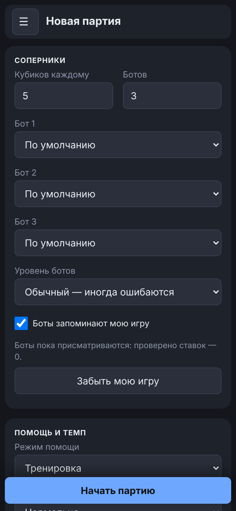
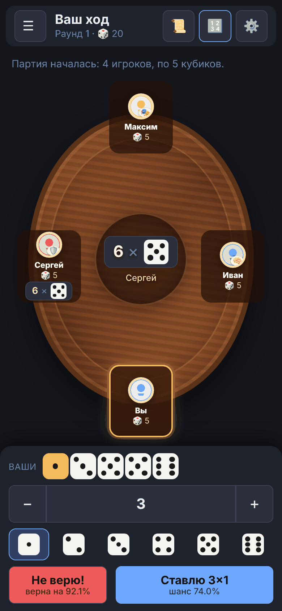

Руководство / Быстрый старт
Быстрый старт
Чтобы сыграть первую партию, ничего устанавливать и настраивать не нужно.
Первая партия за минуту
- Откройте приложение и перейдите на вкладку «Партия». Партия не начинается сама: сначала вы видите экран подготовки с настройками в карточках («Соперники», «Помощь и темп», «Звуки», «Дополнительные правила»).
- Для первого раза настройки можно не менять. Нажмите «Начать партию»: кнопка закреплена внизу экрана, прокручивать настройки до неё не нужно.
- На своём ходу выберите количество кубиков кнопками − и + и цифру, затем нажмите «Ставлю».
- Если считаете, что ставка соперника не сбудется, нажмите «Не верю!».
- Откроется окно с кубиками всех игроков и результатом проверки. Нажмите «Дальше».
- В конце партии появится окно с победителем и кнопка «Сыграть ещё».


Настройки последней партии запоминаются: в следующий раз достаточно одной кнопки. Если страница перезагрузилась посреди партии, на вкладке «Партия» появится кнопка «Продолжить партию».
Что делать дальше
Если Перудо для вас новое, сначала прочитайте правила: они короткие. Затем проходите вкладки приложения слева направо, от простого к сложному:
- Калькулятор показывает, насколько вероятна ставка при ваших кубиках.
- Тренажёр и Упражнения учат принимать решения «верить или нет» и считать в уме.
- Партия — игра с компьютерными соперниками; в режиме «Новичок» приложение подсказывает ход.
- Дуэль и Симуляция — для тех, кому хочется глубже.
- Статистика хранит ваши результаты и позволяет сохранить копию данных.